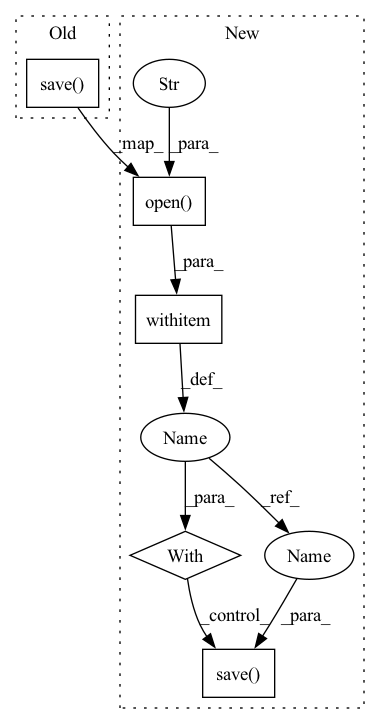

Pattern ID :35116
Before Change
print("averaging checkpoints: ", args.inputs)
new_state = average_checkpoints(args.inputs)
torch.save( new_state, args.output)
print("Finished writing averaged checkpoint to {}.".format(args.output))
if __name__ == "__main__":After Change
print("averaging checkpoints: ", args.inputs)
new_state = average_checkpoints(args.inputs)
with PathManager.open(args.output, "wb") as f:
torch.save( new_state, f )
print("Finished writing averaged checkpoint to {}.".format(args.output))
if __name__ == "__main__":In pattern: SUPERPATTERN
Frequency: 4
Non-data size: 5
Instances Fragment ID: 100173544
Project Name: kssteven418/i-bert
Commit Name: 4d2efae84dc4eaf8c66625ab6af0fdc4aa794da0
Time: 2020-03-30
Author: wyz@fb.com
File Name: scripts/average_checkpoints.py
M Class Name: AnonimousClass
N Class Name: AnonimousClass
M Method Name: main(0)
N Method Name: main(0)
M Parent Class:
N Parent Class:
M File Name: scripts/average_checkpoints.py
N File Name: scripts/average_checkpoints.py
M Start Line: 137
M End Line: 138
N Start Line: 140
N End Line: 143
Before Change
print("averaging checkpoints: ", args.inputs)
new_state = average_checkpoints(args.inputs)
torch.save( new_state, args.output)
print("Finished writing averaged checkpoint to {}.".format(args.output))
if __name__ == "__main__":After Change
print("averaging checkpoints: ", args.inputs)
new_state = average_checkpoints(args.inputs)
with PathManager.open(args.output, "wb") as f:
torch.save( new_state, f)
print("Finished writing averaged checkpoint to {}.".format(args.output))
if __name__ == "__main__": Fragment ID: 100173545
Project Name: mohammadkhalifa/fairseq-tagging
Commit Name: 4d2efae84dc4eaf8c66625ab6af0fdc4aa794da0
Time: 2020-03-30
Author: wyz@fb.com
File Name: scripts/average_checkpoints.py
M Class Name: AnonimousClass
N Class Name: AnonimousClass
M Method Name: main(0)
N Method Name: main(0)
M Parent Class:
N Parent Class:
M File Name: scripts/average_checkpoints.py
N File Name: scripts/average_checkpoints.py
M Start Line: 137
M End Line: 138
N Start Line: 140
N End Line: 143
Before Change
model: A NeuralProphet model object.
super().handle_return(model)
torch.save( model, os.path.join(self.artifact.uri, DEFAULT_FILENAME))
After Change
model: A NeuralProphet model object.
super().handle_return(model)
with fileio.open(
os.path.join(self.artifact.uri, DEFAULT_FILENAME), "wb"
) as f:
torch.save( model, f)
Fragment ID: 100173546
Project Name: maiot-io/zenml
Commit Name: 1f5e8152bc8c4bcd70773d9b05f05c00099639a3
Time: 2022-11-29
Author: 34200873+safoinme@users.noreply.github.com
File Name: src/zenml/integrations/neural_prophet/materializers/neural_prophet_materializer.py
M Class Name: NeuralProphetMaterializer
N Class Name: NeuralProphetMaterializer
M Method Name: handle_return(2)
N Method Name: handle_return(2)
M Parent Class: BaseMaterializer
N Parent Class: BaseMaterializer
M File Name: src/zenml/integrations/neural_prophet/materializers/neural_prophet_materializer.py
N File Name: src/zenml/integrations/neural_prophet/materializers/neural_prophet_materializer.py
M Start Line: 60
M End Line: 60
N Start Line: 62
N End Line: 65
Before Change
model: A torch.nn.Module or a dict to pass into model.save
super().handle_return(model)
torch.save( model, os.path.join(self.artifact.uri, DEFAULT_FILENAME))
After Change
super().handle_return(model)
// Save entire model to artifact directory, This is the default behavior for loading model in development phase (training, evaluation)
with fileio.open(
os.path.join(self.artifact.uri, DEFAULT_FILENAME), "wb"
) as f:
torch.save( model, f)
// Save model checkpoint to artifact directory, This is the default behavior for loading model in production phase (inference)
if isinstance(model, Module):
with fileio.open( Fragment ID: 100173543
Project Name: maiot-io/zenml
Commit Name: 8055ebd9e5b05b2a690929688dae4c513b7526e0
Time: 2022-04-21
Author: 34200873+safoinme@users.noreply.github.com
File Name: src/zenml/integrations/pytorch/materializers/pytorch_materializer.py
M Class Name: PyTorchMaterializer
N Class Name: PyTorchMaterializer
M Method Name: handle_return(2)
N Method Name: handle_return(2)
M Parent Class: BaseMaterializer
N Parent Class: BaseMaterializer
M File Name: src/zenml/integrations/pytorch/materializers/pytorch_materializer.py
N File Name: src/zenml/integrations/pytorch/materializers/pytorch_materializer.py
M Start Line: 52
M End Line: 52
N Start Line: 57
N End Line: 67